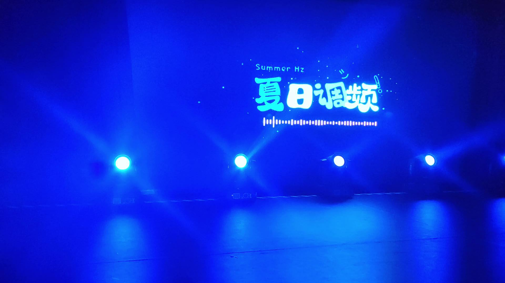
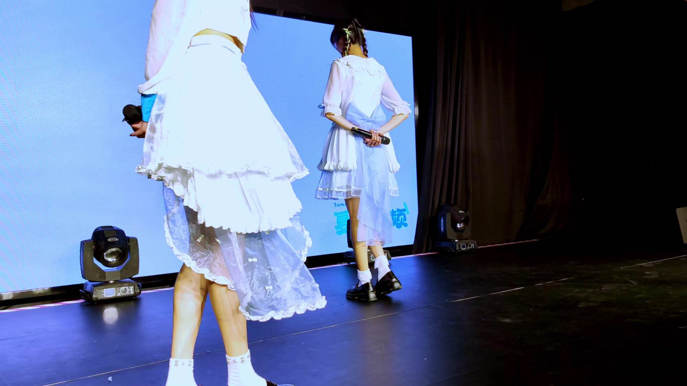

谢兔子！辛苦啦
@兔子mission:
绮丽偶像日KFC MINI VOL 48 银流咖啡联名场
🕐演出时间:4.14
👯♀️演出团体:@夏日调频_official
🙋♀️演出人员:@夏日调频-鱼丸 @夏日调频-蕾蕾 @夏日调频-小椰
演出地点:上海市长宁区长宁路999号兆丰广场1楼聚一场
 兔子mission的微博视频 #starlink偶像计划#
兔子mission的微博视频 #starlink偶像计划#
🕐演出时间:4.14
👯♀️演出团体:@夏日调频_official
🙋♀️演出人员:@夏日调频-鱼丸 @夏日调频-蕾蕾 @夏日调频-小椰
演出地点:上海市长宁区长宁路999号兆丰广场1楼聚一场

- 
- 
651次播放
04:53